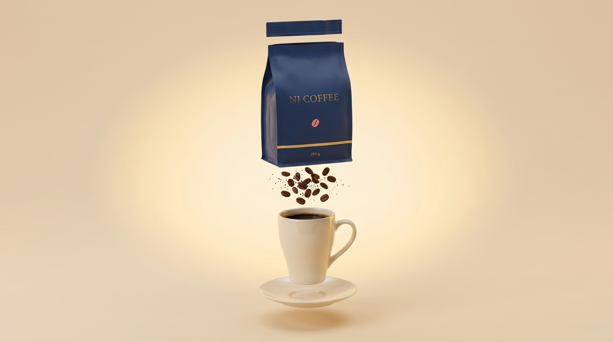

NJ Coffee — Single Origin
Coffee,
Redefined.
One origin. One carefully crafted experience.
Roasted with
intention.
12 kg at a time. Every Tuesday.
Your coffee.
Your ritual.
250 g. Roasted Tuesday. At your door Friday.
Yirgacheffe 250g
$18
Scroll to assemble
The Origin
Rooted in Yirgacheffe.
From the highlands of Ethiopia, discover the origin behind every NJ Coffee experience.
Single-originYirgacheffe
EthiopiaGrown high
2,200 mAltitude

Select
Your coffee. Your ritual.
250 g. Roasted Tuesday. At your door Friday.
Yirgacheffe 250g
$18
NJ Coffee
Make it your moment.
Single-origin Yirgacheffe. Thoughtfully roasted every Tuesday.
Yirgacheffe 250g
$18